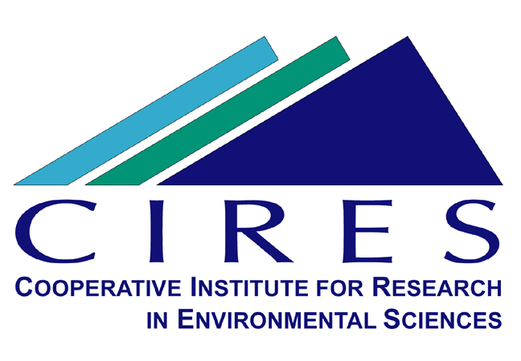
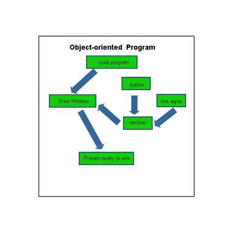
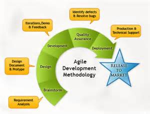

Michael Williams
Boulder
USA
miwi0617@colorado.edu
USA
miwi0617@colorado.edu
Portfolio
| Name | Position |
|---|---|
| CIRES | Webmaster |

Work Experiences
| Company | Position | Start date | End date | Description |
|---|---|---|---|---|
| CIRES | Webmaster | September 2014 | Present | Designed webpages and modified the appearance and setting of the site,Responsible for providing technical support related to computer systems, hardware, and software. |
| NCWIT | Webmaster | Feb 2014 | Aug 2014 | Worked with clients to design courses and programs for women in computing |
Education
University of Colorado at Boulder
- Major: Computer Science
- Track: Software Engineering
- Minor: Japanese
- GPA: 3.5
Skills
HTML & CSS

PHP

JavaScript
MySQL

Python

C++

Object-Oriented Design
I know about utilizing object-oriented programming along with RESTful design practices to optimize my code's capabilities.

Agile Software Development
I have worked with numerous agile teams that follow the scrum methedologies, working in sprints and using user stories to track and guide our teamwork.
Honors
| Honor | Year | Grade |
|---|---|---|
| Dean's List | 2014 | Senior |
References
Rebecca Rowley
NCWIT
Manager
Rebecca.Rowley@colorado.edu
Kiki Holl
CIRES
Webmaster
christine.holl@colorado.edu
Hobby
| Name | Experience |
|---|---|
| Skiing | 9 years |
| Competitive Rhythm Gaming | 7 years |